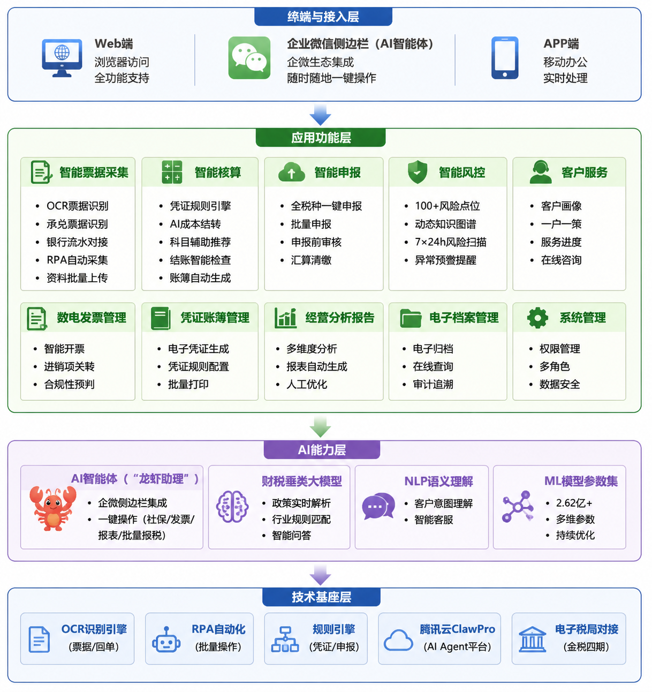
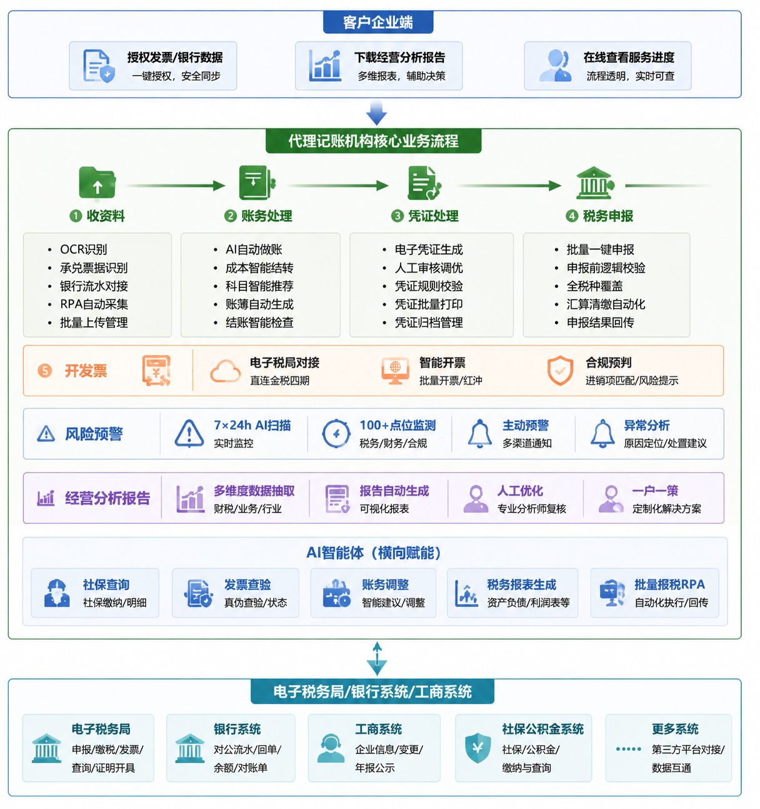

代理记账业务
智能系统建设方案
金税四期全面铺开，税务管理从"票据主导"转向"数据驱动"，中小微企业面临更严格的账务规范与税务稽查。
传统代理记账依赖大量人工操作，效率、准确率、服务成本均存在明显瓶颈，难以满足监管要求和客户专业化需求。
AI+OCR+RPA技术成熟，使财税全流程自动化成为可能。慧算账等头部企业已实现70%标准化工作由系统完成。
构建"AI识别+自动账务+批量申报+风险预警"的半自动化财务处理平台，核心在于替代人工、提升代账公司工作效率。
中国最大的中小微企业财税解决方案提供商（2021-2023年总收入计，市场份额0.5%，为第二大竞争对手近五倍）。核心产品为基于SaaS的智能财税系统SATP。
SATP智能财税系统，融合OCR、ML、RPA及NLP技术，覆盖票据采集、智能核算、自动申报、风险预警、档案管理全流程。
单名会计服务客户数从200-300家提升至400-500家，效率提升超50%；AI承担约70%标准化重复性工作；自动交付率达80%。
2026年深度集成腾讯云ClawPro AI智能体，配备"龙虾助理"；凭证规则引擎+ML模型+2.62亿+多维参数集。
SaaS多租户订阅制：基础版/标准版/一般纳税人版/建安专项版，按套餐收费+增值服务付费。
中国中小微企业财税解决方案提供商第一名（按2021-2023年总收入计）。市场份额0.5%，已是第二大竞争对手的近五倍，折射出行业集中度极低的格局下慧算账的技术平台与规模优势。
核心产品为基于SaaS的智能财税系统SATP，是其所有服务的技术底座。整合机器学习功能的AI赋能系统，融合OCR、ML、RPA及NLP等多项前沿技术。
广泛而多样化的模型参数使其能够根据不同企业类型自动适配财税处理规则。依托SATP系统，提供智能核算引擎、自动化功能、管理会计服务、数据安全及系统保护、可扩展性及适应性等多种能力。
平台依据场景化智能业务逻辑，内设凭证规则引擎，对不同类型、不同规模的企业科目设置、凭证等进行自动化处理，实现系统自动做账。
系统每月自动提取进销项发票、银行回单信息，自动识别业务类型并智能入账生成凭证。
通过自主研发的OCR技术，自动识别银行回单、各类费用小票并完成入账匹配。
内置规则引擎，自动获取企业税种、税率核定信息，通过身份验证、数据加密、安全传输、逻辑校验等手段对接各地申报系统，支持多客户批量申报。
账务完整性检查、余额异常检查、往来账龄分析、业务关联性检查、关键指标检查等项目，保障账务准确率。
提供开票、用票、管票一站式平台，支持多方式快捷开票，通过智能精准赋码、进销项关联、账税联动进行开票合规性预判。
与税局系统、银行系统实现关联，自动获取企业变更信息、年报信息及经营异常信息，方便服务机构及时应对。
成本降低约60%。每名会计从管理约300家提升至400-500家，效率提升超50%。自动交付率达约80%。
通过动态财税知识图谱与全国政策库，实时跟踪各地最新财税法规变化，自动匹配行业合规标准，并通过AI风险扫描技术实现7×24小时在线预警，有效规避漏报、错报及违规风险。
从传统"财税服务商"向"财税军师"进化。AI承担标准化重复性工作，资深财税专家聚焦于企业经营分析、战略规划、财税合规咨询、业财融合等更高价值服务领域，提供一户一式定制方案。
通过SaaS+AI的技术路线实现了边际成本递减和效率递增。在高度分散的市场中占据行业第一的地位，为整个代理记账行业从劳动密集型向技术驱动型转型提供了可复制、可验证的路径参考。
以自研SATP系统为底层，逐步融合OCR、RPA、ML及NLP等多项技术。核心差异在于自研财税垂直大模型，通过对海量财税政策文件、实务案例的深度学习，形成具备行业适配性的智能引擎。
2026年4月与腾讯云ClawPro深度合作，将企业级AI智能体嵌入企业微信侧边栏。会计无需离开聊天窗口即可一键完成社保查询、发票查验、账务调整、税务报表生成、批量化报税等操作。
标准化财税流程中约70%已实现自动化，但剩余30%的非标场景消耗了会计90%的工作量。"龙虾"的逻辑是让AI接管检索、核算和初步处理，会计转变为意图理解和复杂问题裁决的"哨兵"。
2022-2024年研发投入占收入比重已由14%下降。转向大模型外部接入的策略固然短期降本，但也可能削弱对增值税法、金税四期新增政策维度的反应速度。在代账行业政策敏感度极高的背景下，技术自研能力的下滑可能成为长期隐忧。
核心SaaS客户数三年连续下降（21.19万家→21.12万家→20.18万家）。2024年综合营收复合增长率仅为3.36%，增速呈断崖式下滑。ARPU是唯一的正向驱动力，企业战略已从"扩规模"向"挖存量"转变。
每名客户交付人力成本从2022年888元降至2024年738元，毛利率由53.6%升至63.1%。但销售费用超过毛利，获客效率和复购转化尚未形成正循环，仍处在依靠补贴与推广支撑规模的阶段。
直营与授权并行合作的基本盘稳固，但客户留存率波动较大（85.2%→79.4%→80%），高于行业平均60-70%，但近年下滑仍未修复。授权模式较为成熟稳定，但没有直营业务的直接客户深度黏性。
基础版/标准版/一般纳税人版/建安专项版等多版本套餐收费模式，通过升级"进阶解决方案"对冲客户流失，但本质上是对续费率和客户黏性的双重考验。
中国中小微企业财税市场规模超过2000亿元，客户超6000万户中小企业的60%依赖外部财税服务。代账机构多则数十万家免费或低价抢客，排名第一的慧算账仅占0.5%，前五大市占率合计不足1%。
账报税低至500元/年的报价在市场上普遍存在，恶性低价竞争让慧算账在守住"AI+标准化"核心价值的同时，被迫持续降低起算单价，进而挤压利润。
若行业普遍接入大模型后技术本身不再构成壁垒，则最终比拼的是定价、规模、数据闭环，慧算账的差异化将进一步弱化。
百望股份2024年已率先在港股成功上市，行业认可度开始回升。但谁能在金税四期后更精准地帮助中小微企业快速合规和避税，将成为核心决胜逻辑。
竞品如云账房等同样强化了知识图谱与政策迭代能力，行业在加快内卷。慧算账的知识图谱与政策迭代承诺是一个卖点，但差异化优势正在缩小。
| 工作环节 | 核心痛点 | 影响 |
|---|---|---|
| 收资料 人效~20% | 承兑票据需手动录入，工作量大、易出错、难归档 | 高 |
| 账务处理 人效~50% | 成本结转工作量大；高度依赖会计专业水平，科目归属标准不统一；缺乏异常预警；人工主导效率低 | 很高 |
| 开发票 | 需手动登录电子税务局，操作繁琐、耗时久、易出错 | 中 |
| 税务申报 | 人工逐户申报，重复操作多、效率低；缺乏申报前审核机制 | 高 |
| 凭证处理 人效~20% | 全程人工操作，耗时久、成本高；纸质凭证不易归档 | 中 |
| 经营分析 | 依赖会计个人经验，报告质量参差不齐 | 中 |
| 风险预警 | 无专门预警机制，难以提前发现财务及经营潜在问题 | 高 |
支持票据、银行回单、承兑票据等资料的扫描/拍照上传，自动提取关键信息（发票代码/号码/金额/税额/购销方信息），准确率达98%以上。
对接电子税务局、银行系统，实现月初自动远程提取进销项发票、银行回单信息，自动识别业务类型并智能入账生成凭证。
针对承兑票据手动录入痛点，开发专门的票据图像识别模块，自动提取出票人、收款人、金额、到期日等信息并同步至系统数据库。
支持扫描件、照片、Excel清单等多格式文件批量上传，实现资料一键入库，提供按客户/时间/票据类型等多维度筛选与批量导出。
针对生产制造、商贸企业成本结转工作量大的痛点，开发专属成本核算功能，支持原材料、人工、制造费用自动分摊，自动生成存货台账，实现多行业专属配置。
接入大数据科目辅助引擎，基于业务类型智能推荐会计科目，构建行业-科目映射知识图谱，解决科目归属不统一的问题。
内置结账智能检查，覆盖账务完整性检查、余额异常检查、往来账龄分析、业务关联性检查、关键指标检查等多个维度。
依据场景化、智能化的业务逻辑，内设凭证规则引擎，实现系统自动做账，自动生成标准账务凭证和账簿报表。
运用机器学习模型实现所有类型的税项、费用及财务报表的自动记账。基于2.62亿+多维参数ML模型，持续优化记账准确率与推荐效果。
系统自动获取企业税种、税率核定信息，支持扫码登录、一键关联企业信息，减少手动配置环节。
提供开票、用票、管票一站式平台，支持多方式快捷开票，通过智能精准赋码提升开票效率。
进销项发票自动关联，账税数据实时联动，对开票整体合规性进行预判，减少税务风险。
实现发票与账务数据自动关联，开票结果实时同步至账务系统，避免数据孤岛和重复录入。
内置规则引擎，自动获取企业税种、税率核定信息，通过身份验证、数据加密、安全传输、逻辑校验等手段对接各地申报系统，实现安全稳定的全税种一键纳税申报。
支持多客户、全税种批量申报任务，实现无人值守申报，极大缩短人为干预申报过程，大征期效率提升显著。
系统自动进行表单数据检查、表间关系检查、费用率/毛利率/税负率检查分析，根据数据信息给出纳税提醒，杜绝人为错报、漏报。
系统自动填写基础信息和表单，完成汇算清缴全流程，支持人工调整参数与规则配置。
即时更新企业申报状态，对异常信息进行预警，申报台账支持查询所有申报任务历史，系统自动更新申报状态及异常预警。
系统自动生成记账凭证，支持人工调整参数与规则配置。查询电子凭证列表，详情查看，支持编辑调整（科目/金额/摘要）。
实现多客户凭证、账簿、报表、自制原始凭证一键批量打印，支持预览打印详情、编辑打印参数、执行批量打印。
在线电子归档与合规存储，支持按客户、时间、凭证类型等多维度快速检索查询，电子凭证/账簿/报表自动归档存储。
支持电子凭证共享与权限管理，查询归档文件，详情在线预览，下载PDF，满足审计追溯需求。
预设营收趋势、成本结构、现金流状况、税负分析、应收账款周转率、销售毛利率等多维度分析维度，打通业务、财务、税务数据孤岛。
系统自动提取经营数据生成报告初稿，支持人工修改完善。实时展示重要指标趋势图表，支持日期范围查询与图表数据导出。
基于企业收入规模、纳税人资质、行业特征等多维度信息，提供一户一策定制化分析，主动识别企业经营风险，构建完善的费用管控体系。
查询企业历史报告列表，详情在线查看，下载PDF/Excel，支持删除旧版报告。报告质量标准化，不再依赖会计个人经验。
预设100多个风险点位，涵盖工商、税务、现金等10余大类财务数据。支持新增/编辑风险监测规则（税负率异常/成本波动/现金红字等），设置预警阈值。
内置动态财税知识图谱与全国政策库，实时解析最新财税法规，自动匹配行业合规标准。实时同步最新财税法规，自动匹配行业资质标准。
AI风险扫描7×24小时在线，精准排查账务异常、税务风险，提前预警、主动处置。系统自动运行风险扫描任务，查询企业风险状态（绿色安全/黄色提示/红色预警）。
实现风险点位识别在预警、费用异常、预算超额等方面的自动监测与触发。通过站内消息、邮件、短信提醒，生成异常分析提示辅助人工排查，导出风险报告。
将AI Agent嵌入会计日常工作界面（企业微信侧边栏），无需切换系统即可一键完成社保查询、发票查验、账务调整、税务报表生成等操作，甚至驱动批量报税RPA流程。
AI承担标准化重复性工作（约70%），财税专家聚焦复杂账务调整、政策解读、风险研判、税务优化等高价值环节。实现"AI承担标准化工作，专业人做专业事"。
单名会计服务客户数从200-300家提升至400-500家，效率提升超50%。通过Token消耗可视化推动成本精细化管理。
支持跨环节智能体协作：收资料→账务处理→申报→风险预警→报告，形成端到端流程自动化闭环。自然语言输入任务，系统自动执行并返回结果。
- 图像识别（OCR）技术，特别是针对承兑票据的结构化提取
- 移动端/PC端上传组件选型（批量、多格式、自动压缩、方向校正）
- 数据与后续账务处理环节的字段映射关系
- 承兑票据种类（银行承兑/商业承兑）及版式、清晰度情况
- 纸质资料平均数量（每日/每月），现有扫描设备
- 是否允许客户自助拍照上传
- 识别准确率最低容忍度（95%还是99%）
- 承兑票据版面不统一，部分要素位于不规则位置，OCR误识别率高
- 票据上的印章、折痕、反光会严重干扰识别
- 需设计"人工校验界面"，平衡自动化与准确性
- 是否接受"OCR提取 + 人工逐张确认"的半自动模式？
- 识别错误导致后续账务出错，责任如何界定？
- 是否需要保留原始图片作为法律凭证？
- 除发票、对账单、承兑票据外，还有哪些特殊单据需识别？
- 成本结转规则引擎：按品类/批次/加权平均/先进先出等规则，允许客户配置
- 会计科目推荐模型：关键词匹配 vs 外部知识库/向量检索
- 预警系统规则设计：借贷不平、金额为负、无附件、供应商异常等
- 智能体加工模块：自动读取原始凭证 → 生成分录草稿 → 等待人工审核
- 典型企业类型占比（如60%商贸、30%生产制造）
- 常用科目树层级、末级科目数量
- 成本结转最大工作量集中点
- 客户对"自动推荐科目"的信任程度
- 是否有历史账套数据可用于训练
- 会计科目归属没有绝对唯一标准，不同会计判断可能不同
- 成本结转涉及多个前置单据，若无数据无法真正自动化
- 预警规则过严产生大量误报，过松则失去意义
- 智能体模块本质是工作流引擎，复杂度较高
- 是否接受"系统只生成建议分录，必须会计审核后方可过账"？
- 成本结转规则是否可由客户财务经理自行配置？
- 若无规范出入库数据，是否接受手工补录后再结转？
- 账务处理速度要求：每月5号前完成，系统能压缩到几天？
- 是否愿意提供过去一年脱敏凭证数据建立规则库？
- 电子税务局接口可行性：各地是否提供开放API？大部分需RPA或第三方税控服务商接口
- 扫码登录技术实现（扫脸/企业码）
- 发票模板与业务单据的映射关系
- 目前为多少家企业代开发票，每月平均开票量
- 税控设备类型（税务UKey、税控盘）及托管情况
- 是否接受第三方电子发票服务平台（可能有额外费用）
- 开票内容是否固定还是高度变化
- 各地电子税务局接口不稳定，政策变化频繁，自行对接维护成本极高
- RPA方式容易被验证码、滑块、人脸识别阻断，可靠性不足
- 红字发票、作废、冲红等异常流程难以全自动化
- 是否允许集成第三方成熟电子发票API（诺诺网、百望云）？预算是否覆盖？
- 自动开票失败，是否可降级为"生成待开票数据文件，人工导入"？
- 开票环节是否需要反向更新到账务处理（如自动生成应收账款凭证）？
- 批量申报可行性：RPA逐个登录 vs 税务局备案接口（需代理商资质）
- 申报前校验逻辑：收入与增值税申报表一致性、进项税匹配、利润与所得税钩稽
- 数据提取范围：科目余额表、纳税调整表、发票汇总表等自动生成申报表
- 服务企业的税种及申报频率
- 目前申报错误/漏报的主要原因
- 是否允许系统生成XML/Excel由人工上传？还是必须全自动？
- 申报错误导致罚款，系统提供方是否承担责任？
- 税务政策存在地域差异和时效性，规则需持续更新
- 批量申报需存储企业税务局账号密码，存在安全合规风险
- 税务局接口申请门槛高（通常要求涉税专业服务机构且备案）
- 是否接受"系统自动填报 + 生成预览表 + 人工一键提交"？
- 由谁管理各企业电子税务局登录凭证？系统是否可用保险柜模块存储？
- 税务局接口变更导致申报失败，是否接受人工应急处理？
- 是否已有其他申报辅助软件？为何不满意？
- 电子凭证生成：记账凭证 + 原始单据图片汇总为PDF/OFD
- 在线归档目录结构（按企业-年度-月份-凭证号）
- 与打印、装订、邮寄供应商对接可能性
- 每月生成多少本凭证，每本平均厚度
- 打印装订具体要求（封面格式、针式打印、打孔位置）
- 是否必须保留纸质档案满足审计/法律要求
- 是否已有合作打印寄送外包商
- 电子凭证法律效力：需了解所在地是否允许电子会计凭证归档
- 自动排版时原始图片可能模糊、颠倒、重复
- 邮寄地址管理频繁变动
- 是否愿意完全放弃纸质凭证，改为加密电子光盘或云归档？
- 如必须保留纸质，是否接受"系统生成打印清单和封面，客户自行打印装订"？
- 未来3年是否采用电子会计档案合规模式？
- 标准化指标库：资产负债率、毛利率、应收账款周转率、现金流结构及行业对比数据来源
- 报告模板设计：可配置段落、图表、文字解释模板
- 数据接口：从账务系统抓取财务报表、科目余额、辅助核算
- 目前提供给企业主的报告样例，哪些部分最受重视
- 企业主常见提问（如"为何利润下滑""哪个产品赚钱"）
- 是否接受报告完全由系统自动生成不修改
- 是否需支持不同行业不同分析重点
- 分析结论不能过于笼统，需结合业务数据，但业务数据往往不在财务系统中
- 若无预算或去年同期数据，无法做同比/环比
- 报告建议部分如错误，可能误导客户决策，带来责任风险
- 是否可以先只做"数据可视化仪表板"，而不自动生成带文字结论的报告？
- 客户是否愿意为每个企业补充行业代码和经营数据提升分析质量？
- 系统生成的结论错了，客户是否会要求承担咨询责任？
- 多维度预警配置：连续2个月毛利率下降超10%、单笔报销超5万、应付逾期30天以上等
- 实时监测方案：每日定时扫描 vs 每次数据导入触发
- 提醒方式：站内信、邮件、钉钉/企微机器人
- 异常分析提示：关联到具体科目、凭证、原始图片
- 最常遇到的财务异常场景（存货账实不符、往来长期挂账、税负率异常）
- 是否需对不同企业设置不同预警阈值
- 预警产生后，由系统指派任务还是仅通知
- 是否希望与税务局纳税风险提示对接（难度极大）
- 预警规则一旦设定，可能出现大量无效预警，导致客户关闭功能
- 部分异常需跨期间数据，初期缺乏历史数据无法判断
- "实时监测"对系统性能要求较高，管理一千家以上企业时压力大
- 是否愿意分阶段建设：首期只做3-5项最核心预警？
- 是否有专人处理预警，还是希望系统自动处理？
- 预警误报是否会损害客户对系统的信任？


| 序号 | 一级菜单 | 二级菜单 | 功能 | 功能描述与操作颗粒度 |
|---|---|---|---|---|
| 1 | 票据管理 | 票据采集 | OCR智能识别扫描 | 扫描/拍照上传→系统自动识别关键信息（发票代码/号码/金额/税额/购销方）→录入→详情展示→人工编辑确认 |
| 承兑票据处理 | 承兑票据电子化录入 | 上传承兑票据扫描件→OCR提取关键字段（出票人/收款人/金额/到期日）→录入→自动同步至票据库 | ||
| 银行回单采集 | 银行流水对接 | 银行账户授权→系统自动抽取流水→关联业务类型智能入账。操作：RPA查询→自动录入→人工编辑确认 | ||
| 票据台账 | 票据管理 | 查询列表（按客户/时间/票据类型筛选），查看单张详情，支持批量导出与删除 | ||
| 2 | 智能核算 | 自动记账 | 凭证规则引擎 | 设置规则模板（新增/编辑）→系统自动执行→详情查看凭证生成结果→人工审核确认 |
| AI成本结转 | 成本智能核算 | 原材料/人工/制造费用自动分摊→自动生成存货台账（新增/编辑规则）→自动生成成本结转凭证 | ||
| 会计科目辅助 | 科目智能推荐 | 基于行业特性与业务类型自动推荐科目→人工审核选择→支持手动新增/编辑科目映射规则 | ||
| 结账检查 | 智能结账核查 | 执行账务完整性/余额异常/往来账龄/业务关联性/关键指标检查，查看检查报告详情→问题项标注→人工处理闭环 | ||
| 账簿报表明细 | 财务账簿 | 查询查看凭证列表/明细账/总账/科目余额表/财务报表→详情展示→支持导出与打印 | ||
| 3 | 数电发票 | 开票管理 | 智能开票 | 录入开票信息（客户/商品/金额）→智能赋码→详情预览→确认提交开票→支持编辑开票参数 |
| 发票台账 | 发票综合管理 | 查询进项/销项/异常发票清单→查看单张详情→导入外部发票数据→导出报表 | ||
| 合规检查 | 开票合规预判 | 系统自动进行进销项差异分析→查询查看合规性分析结果→发现异常发票自动标红预警 | ||
| 4 | 税务申报 | 一键申报 | 全税种申报 | 查询待申报企业列表→选择目标→系统自动获取税种税率核定信息→详情预览→提交一键申报→查询结果反馈 |
| 批量申报 | 多企业批量申报 | 查询待申报列表→批量勾选→创建批量申报任务→无人值守自动化执行→查询申报结果列表 | ||
| 申报前审核 | 智能审核校验 | 申报自动触发表单检查/表间关系校验/费用率毛利率税负率分析→产生异常提醒→详情查看审核结果→人工修正 | ||
| 汇算清缴 | 自动化汇算清缴 | 系统自动填写基础信息和表单→新增申报数据→详情预览→支持编辑调整→确认申报 | ||
| 申报台账 | 申报历史与状态 | 查询所有申报任务历史列表→查看单次详情（企业/税种/金额/状态/时间）→系统自动更新申报状态及异常预警 | ||
| 5 | 凭证账簿 | 电子凭证 | 电子凭证生成 | 系统自动生成记账凭证→查询电子凭证列表→详情查看→支持编辑调整（科目/金额/摘要）→导出与打印 |
| 凭证装订 | 批量打印管理 | 支持多客户/多凭证一键批量打印预设任务→预览打印详情→编辑打印参数→执行批量打印 | ||
| 电子归档 | 凭证与账簿归档 | 电子凭证/账簿/报表自动归档存储→查询归档文件→详情在线预览→下载PDF | ||
| 账簿打印 | 账簿及报表打印 | 支持打印明细账/总账/科目余额表/财务报表→设置打印参数（编辑）→执行打印 | ||
| 6 | 经营分析 | 标准报告生成 | 多维度数据抽取 | 系统自动生成营收趋势/成本结构/现金流/税负分析等多维度可视化报表→生成报告初稿→人工编辑优化→详情预览 |
| 定制化配置 | 一户一策 | 针对企业行业特征/收入规模/发展阶段设置专属分析维度（新增/编辑规则）→系统按预设维度生成报告→企业端查询查看 | ||
| 报告管理 | 报告查询与导出 | 查询企业历史报告列表→详情在线查看→下载PDF/Excel→支持删除旧版报告 | ||
| 核心指标看板 | 可视化经营仪表盘 | 实时展示应收账款周转率/销售毛利率/税负率等重要指标趋势图表→支持日期范围查询→导出图表数据 | ||
| 7 | 风险预警 | 风险点位配置 | 预警规则预设 | 新增/编辑风险监测规则（税负率异常/成本波动/现金红字等100+点位可配置），设置预警阈值，详情查看规则 |
| 实时监测 | 7×24h风险扫描 | 系统自动运行风险扫描任务→查询企业风险状态（绿色安全/黄色提示/红色预警）→自动推送预警消息 | ||
| 异常分析提示 | 异常详情 | 查询风险异常案例列表→详情查看异常数据及分析说明→导出风险报告→人工跟进处理闭环 | ||
| 知识图谱 | 政策库与法规解析 | 实时同步最新财税法规→查询政策内容→自动匹配行业资质标准→详情展示适配分析结果 | ||
| 8 | AI智能体 | 企微集成 | 企业微信侧边栏 | 会计登录企业微信→AI智能体自动嵌入侧边栏→支持自然语言输入任务→系统自动执行并返回结果 |
| 快捷任务 | 一键批量操作 | 通过自然语言指令触发：社保查询/发票查验/账务编辑调整/批量报税RPA/税务报表生成。批量勾选企业→AI驱动RPA自动完成流程 | ||
| Token管理 | 使用情况监测 | 查询Token消耗明细报表，支持分企业/分人员/分日期维度统计，详情展示消耗来源，支持成本分析 | ||
| 任务调度 | 定时与批量任务管理 | 新增定时执行任务（批量报税/批量生成报告等）→查询任务执行状态→详情查看执行结果 | ||
| 9 | 客户管理 | 客户档案 | 基本信息维护 | 新增企业客户信息（新增增量客户）→查询客户列表→详情查看客户完整资料→编辑更新信息 |
| 服务状态跟踪 | 进度管理 | 查询客户各环节的作业进度（资料归集/账务处理/凭证生成/税务申报）→详情看板展示明细→在线同步客户 | ||
| 工单管理 | 任务工单分配 | 新增服务工单→指派负责人→查询处理状态→详情查看工单处理记录→工单结单 | ||
| 10 | 系统管理 | 角色权限 | 用户管理 | 新增用户→分配系统角色→编辑权限配置→查询用户列表→详情查看用户权限 |
| 数据安全 | 日志与审计 | 查询操作日志→详情查看操作记录→数据备份与加密检查→导出审计追溯报告 |
针对生产制造/商贸企业，支持原材料、人工、制造费用自动分摊，自动生成存货台账与成本结转凭证。
基于行业特性与业务类型自动推荐会计科目，构建行业-科目映射知识图谱。
嵌入企业微信侧边栏，自然语言驱动：社保查询、发票查验、账务调整、批量报税RPA。
预设100+风险点位，内置动态财税知识图谱与全国政策库，AI实时解析法规，主动预警处置。
政策实时解析、行业规则匹配、智能问答。基于2.62亿+多维参数ML模型，持续优化。
收资料→账务处理→申报→风险预警→报告，跨环节智能体协作，形成全流程自动化闭环。
生产制造/商贸企业的成本核算规则复杂，涉及多种成本核算方法及间接费用分摊逻辑，成本结转工作量大，高度依赖会计专业水平。
开发专属成本核算功能，支持原材料、人工、制造费用等自动分摊，自动生成存货台账，实现多行业专属配置。
- 支持品种法/分批法/分步法等多种成本核算方法
- 间接费用自动分摊与归集
- 自动生成成本结转凭证
- 多行业预设规则库
- 调研各行业成本核算SOP
- 构建成本归集与分摊规则库
- 结合行业经验开发预设规则
- 持续迭代优化规则准确性
基于企业行业分类、业务流水的语义分析，系统基于行业特性与业务类型自动推荐会计科目，人工审核选择，支持手动新增/编辑科目映射规则。
构建行业-科目映射知识图谱，覆盖常见票据对应凭证规则（发票、费用、工资、银行回单），实现业务类型到会计科目的智能匹配。
接入大数据科目辅助引擎，基于2.62亿+多维参数ML模型，持续学习优化推荐准确率。模型参数广泛而多样化，能根据不同企业类型自动适配财税处理规则。
解决科目归属标准不统一的问题，降低对会计专业水平的依赖，使账务处理从"人工主导"转变为"AI主导、人工审核"。
将AI Agent嵌入会计日常工作界面（企业微信侧边栏），会计登录企业微信后AI智能体自动嵌入侧边栏，支持自然语言输入任务，系统自动执行并返回结果。
通过自然语言指令触发：社保查询、发票查验、账务编辑调整、批量报税RPA、税务报表生成。具体到批量报税：批量勾选企业→AI驱动RPA自动完成流程。
AI承担标准化重复性工作（约70%），财税专家聚焦复杂账务调整、政策解读、风险研判、税务优化等高价值环节。会计从操作者转变为"哨兵"。
以Token消耗可视化推动成本精细化管理。查询Token消耗明细报表，支持分企业/分人员/分日期维度统计，详情展示消耗来源，支持成本分析。
新增定时执行任务（批量报税、批量生成报告等），查询任务执行状态，详情查看执行结果。支持跨环节智能体协作：收资料→账务处理→申报→风险预警→报告。
新增/编辑风险监测规则（税负率异常/成本波动/现金红字/费用超标等100+点位可配置），设置预警阈值，详情查看规则。
系统自动运行风险扫描任务，查询企业风险状态（绿色安全/黄色提示/红色预警），自动推送预警消息。AI风险扫描7×24小时在线。
内置动态财税知识图谱与全国政策库，实时解析最新财税法规，自动匹配行业合规标准。实时同步最新财税法规，自动匹配行业资质标准。
查询风险异常案例列表，详情查看异常数据及分析说明，导出风险报告，人工跟进处理闭环。通过站内消息、邮件、短信提醒。
基于2.62亿+多维参数ML模型，广泛而多样化的模型参数使其能够根据不同企业类型自动适配财税处理规则。持续优化记账准确率与推荐效果。
内置动态财税知识图谱与全国政策库，实时解析最新财税法规，自动匹配行业合规标准。实时跟踪各地最新财税法规变化。
通过对海量财税政策文件、实务案例的深度学习，形成具备行业适配性的智能引擎，精准掌握行业财税规则与政策适配逻辑。
NLP语义理解，客户意图理解，智能客服。会计可通过自然语言询问政策问题、操作指引，系统自动给出精准解答。
慧算账自研财税垂直大模型，2026年4月选择与腾讯云ClawPro深度合作。从自研大模型到外部大模型接入的转变，反映出对成本结构的审慎考量——自研训练Token消耗高且准确率不稳定，直接Agent接入更具成本效益。
票据采集→OCR识别→自动生成凭证→AI审核→期末结账→生成财报→一键报税→风控扫描→生成经营分析报告。各环节数据自动流转，无需人工重复录入。
AI智能体在每个环节提供辅助：收资料时自动识别分类、做账时推荐科目、申报前审核数据、申报后扫描风险、期末生成分析报告。实现端到端智能化。
在关键节点设置人工审核裁决：凭证生成后人工审核确认、申报前人工预览修正、风险预警后人工跟进处理。确保AI辅助而非替代人的专业判断。
基于实际业务数据持续优化各环节AI模型，规则引擎自我迭代，知识图谱动态更新，系统越用越智能，非标场景处理能力逐步增强。
| 维度 | 难度 | 说明 |
|---|---|---|
| OCR票据识别 | ★★★☆☆ 中等 | 常规发票识别成熟（98%+）；重点攻关承兑票据版面分析与字段提取，需定制化训练模型 |
| AI成本结转模块 | ★★★★☆ 较高 | 成本核算规则复杂，涉及多种方法及间接费用分摊逻辑，需深度调研并开发预设规则库 |
| 会计科目辅助推荐 | ★★★☆☆ 中等 | 需构建行业-科目映射知识图谱，难度取决于业务场景覆盖面 |
| 批量税务申报 | ★★★★☆ 较高 | 各地电子税局接口不统一，维护量大；建议RPA与接口并行方案 |
| 凭证电子归档 | ★★☆☆☆ 较低 | 技术成熟，主要是存储架构选型与权限合规设计 |
| 风险预警系统 | ★★★☆☆ 中等 | 100+风险点位规则库建设复杂度中等，核心在于规则准确性调优与误报率控制 |
| AI智能体集成 | ★★★★☆ 较高 | 需对接大模型平台，核心难点在于Agent技能封装与数据安全隔离 |
| 整体系统集成 | ★★★★☆ 较高 | 7大环节联动、多端协同，需确保大并发环境下系统稳定性与数据一致性 |
梳理客户业态（小规模/一般纳税人/个体户/建筑/商贸/服务），统一会计科目体系、做账规则、结转规则、报税周期，准备各行业默认会计科目与常见票据对应凭证规则。
必须做多租户隔离：每个客户独立账套、数据隔离、权限隔离。确定版本：基础版/标准版/一般纳税人版/建安专项版，后续做套餐收费。
OCR厂商对接（接口/调用量/单价/并发）、电子税局调研（申报接口/格式/模板，先半自动后全自动）、发票与银行回单对接。
财税数据加密、传输HTTPS、权限分级、禁止越权看其他客户账套。后期可做等保三级，前期先把日志、权限、数据隔离做扎实。
- 客户类型：小规模、一般纳税人、个体户
- 行业分类：建筑、商贸、服务等
- 现有做账流程：会计手工怎么做、凭证怎么做、报税怎么报
- 统一会计科目体系
- 统一做账规则、结转规则
- 统一报税周期
- 做成标准模板供系统调用
- 每个客户独立账套
- 数据隔离、权限隔离
- 确定版本：基础版/标准版/一般纳税人版/建安专项版
- 后续做套餐收费
- 各行业默认会计科目
- 常见票据对应凭证规则（发票、费用、工资、银行回单）
- 税负率预警阈值
- 进销项匹配规则、费用异常规则
二选一：自研模型或接入成熟厂商（发票、回单、营业执照OCR）。提前谈好接口、调用量、单价、并发限制。
全电发票、增值税发票查验、自动拉取发票渠道。银行回单对接：主流银行流水/回单获取方式（接口或标准导入模板）。
提前调研所在省份电子税局申报接口、申报格式、申报表模板。先做半自动→再做全自动，降低初期开发难度。
对象存储：存发票PDF、凭证图片、报表文件。短信接口：验证码、通知。支付接口：后期套餐续费、增值服务付费（可后期再加）。
前后端框架、代码规范、接口文档规范、数据库设计规范，全员统一。
提前定：共享库共享表、按租户ID隔离，不要后期再改，重构成本极高。
- 财税数据加密存储与传输（HTTPS）
- 权限分级管理，禁止越权查看其他客户账套
- 操作日志、做账日志、修改留痕（财税必须可追溯）
- 后期可做等保三级认证
- 前期先把日志、权限、数据隔离做扎实
- 满足审计追溯需求
- 服务器监控、接口监控
- 报错告警、做账任务队列监控
- 防止批量做账卡死
- 短信/企微/公众号报税提醒
- 逾期提醒、风险预警推送
- 站内消息、邮件、短信多通道
当前客户总量及月均增长量？会计团队规模及岗位分工？预测系统上线后并发访问峰值？
承兑票据主要来源（银承/商承）及月处理量级？纸质承兑占比？未来电子承兑比例预期？
生产制造企业主要涵盖哪些行业？现有成本核算SOP和常用分摊方法？
客户分布在哪些省/市？是否需要支持跨省多地区一键申报？
现有财税系统是什么？是否有API？是否已使用企微/钉钉/飞书？
倾向哪家大模型平台？AI辅助范围需求？
期望建设周期？预算范围？建议分三阶段实施。
历史账套数据量级及格式？是否需全量迁移？迁移时间窗口？
确认业务规则
定多租户模式
梳理全流程闭环
准备规则库
确定技术架构
敲定第三方资源
MVP开发
试点上线
- 业务规则确认：会计科目体系、做账规则、结转规则、报税周期标准化
- 多租户版本定义：基础版/标准版/一般纳税人版/建安专项版功能边界
- 流程闭环固化：票据收集→识别→生成凭证→审核→结账→财报→报税→风控→年报
- OCR厂商对接：谈好接口、调用量、单价、并发限制
- 电子税局调研：申报接口、格式、模板，先半自动后全自动
- 多租户底层设计：共享库共享表、按租户ID隔离，提前定好
- 固定业务财税负责人：给开发定做账规则、凭证规则、报税逻辑
- 专职分工：产品/后端/前端/测试明确职责
- 存量数据迁移：旧账、期初余额、科目余额标准导入模板
- 第一阶段：收资料 + 账务处理 + 税务申报（核心MVP）
- 第二阶段：凭证管理 + 经营分析报告
- 第三阶段：AI智能体 + 风控深化